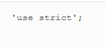
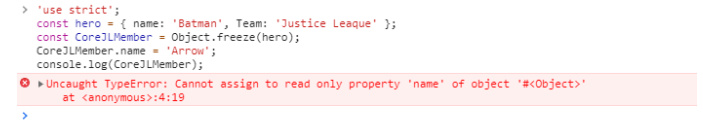
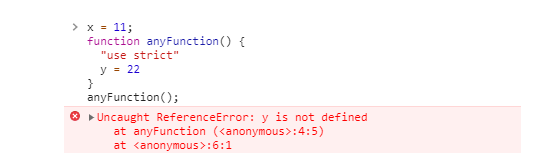
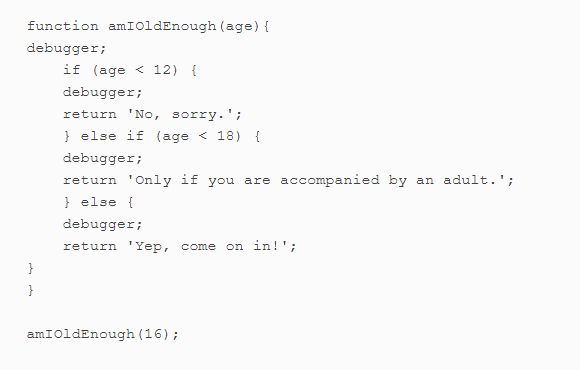

Week 5- Tesing and Debugging summarized,
Testing
Errors is an unavoidable phenomenon in programming. As programmers we try our
best to minimize it impacts and ensure that we find ways to identify and deal
with them quickly. In this section we will be discussing the importance of
testing.
The Importance of Testing
The importance of testing is glaring before programmers as this will help to identify any defects or errors that could possibly be made during development phase. In making sure this is achieved programmers ensure exceptions are caught and dealth with, and code is tested rigorously. Product success is gauged by customers reliability on the product. Its quality speaks volume, So for us to deliver high quality product, proper testing is required, as this enhances the level of support or facilities given to the customers. Moreover, a well-tested product incurs lesser maintenance cost and so the results delivered are more accurate, consistent and reliable.With the help of testing the overall security of the product can be improved. For this reasons programmer should ensure that the code they write fails loudly in development so any errors can be identified and fixed quickly. For us to eliminate silent javaScript error we would talk briefly about Strict Mode and its benefit
Strict Mode and Its Benefit
Strict mode eliminates some JavaScript silent errors by changing them to throw errors. it prevent errors, when relatively “unsafe” actions are taken (such as gaining access to the global object) The aim to “use strict” literal is to indicate that the code should be executed in the “strict mode.” It helps us to identify some hidden bugs. We can’t use undeclared variables in strict mode. below we list some benefits of Strict Mode:
Benefits
Generally, strict mode encourages a better quality of JavaScript to be written that befits a programmer, so its use is recommended. Using strict mode in javascript the following image shows the string to be added in the first line of a JavaScript file.

It is important we know of "Strict Mode Invocation" as strict mode is applicable to entire scripts or the individual functions. We can’t apply it to the block statements enclosed in {} braces. If we try to use it inside blocks, it will have NO effect. The image below shows applying 'Strict' mode to the entire Script.

use strict statement has eliminated some JavaScript silent errors by changing them to throw errors. It is quite useful when we are debugging any web Application. This images below will show us the effect of using'Strict' and not using 'Strict' in a Javascript file.
You can even use strict mode on a per-function basis by adding the line inside a function. Strict mode will then only be applied to anything inside that function: the image below will help to illustrate the use of strict inside a function.

what the above image shows us is that scope of “use strict” is bound to function only and not the whole script file.
Debugging
Debugging is the process of finding out where bugs occur in the code and then dealing with them. It is the process of detecting and removing of existing and potential errors (also called as ‘bugs’) in a code that can cause it to behave unexpectedly or crash. Lets look at some debugging tools
Debugging Tools
Most modern browsers also have a debugging tool that allows you to set breakpoints in your code that will pause it at certain points. Then all values of the variables can be seen at these points and then get modified. Thus this can be very handy when trying to track down bugs. Below is the links to the debugger documentation for each of the major browsers:
One useful commands is the debuuger Keyword. This will create a breakpoint in a code that will pause the execution of the code and allow one to see where the program is currently up to. You can hover over any variables to see what value they hold at that point The image example below shows how the debugger command can be used, as you then invoke the amIOldEnough() function, the browser's debugging tool will automatically kick in and you'll be able see the value of the age variable by hovering over it:

It is important to remember to remove any references to the debugger command before shipping any code, otherwise the program will appear to freeze when people try to use it!